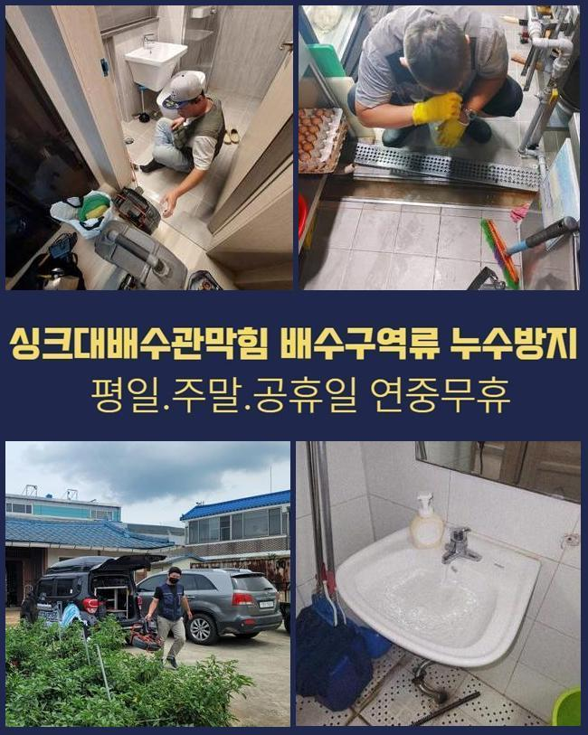
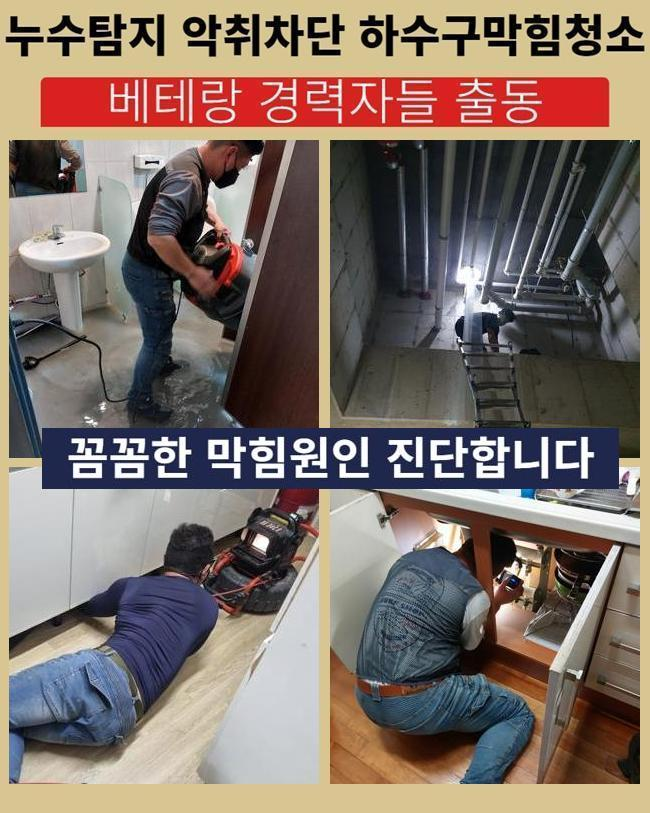
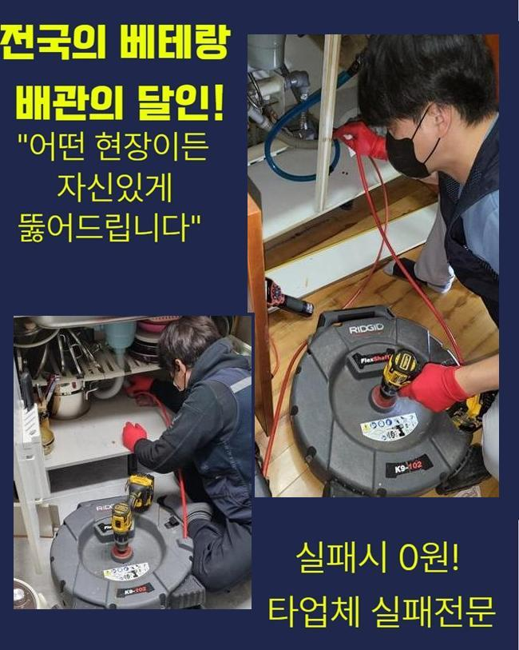
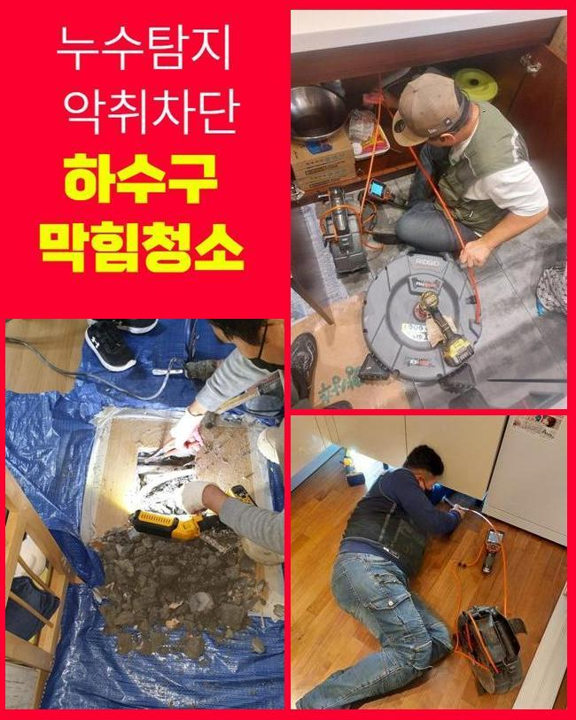
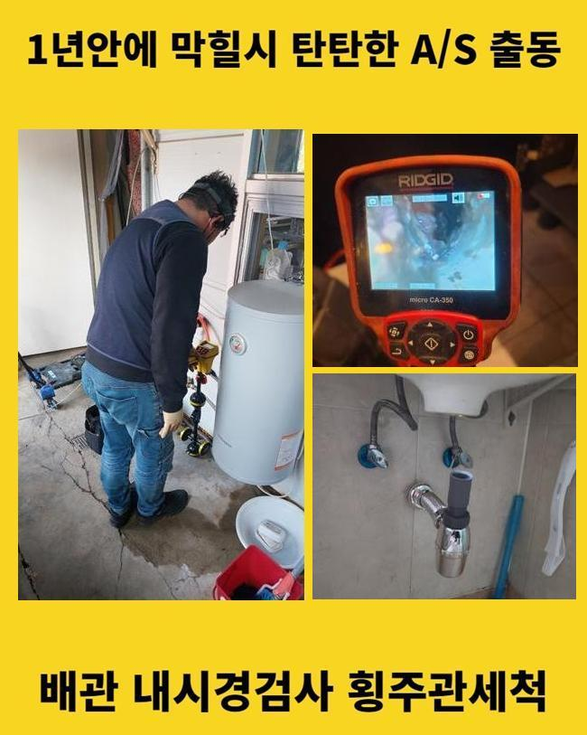
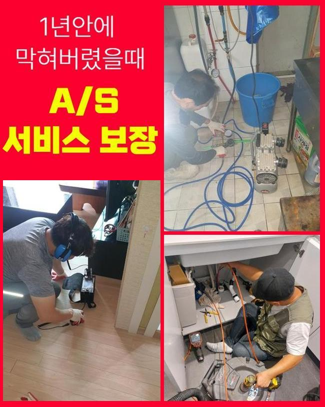

🏠 동작구 노량진동세탁실역류 대방동 오수맨홀청소 출장설비
서울 동작구 하수구막힘 전문 시공 후기

📋 작업 개요
- 위치: 서울 동작구, 동작구, 서울
- 서비스 유형: 하수구막힘, 배관막힘, 맨홀막힘, 집수정막힘, 누수수리, 역류해결, 뚫는업체, 배관청소, 고압세척
- 작업 일시: 2025. 5. 21. 22:05
- 업체명: 하수구수사대 (010-5615-2118)
🔍 문제 상황
부산진구 하수도고압세척 하수집수정 욕실하수구청소 하수관역류
욕실 내의 하수구가 폐쇄돼서 하수가 흘러나가지 못하는 경우가 벌어졌어요
가장 적절한 대응을 실시하려고 의뢰지를 신속하게 이동하였습니다
상가나 일반 주거지나 어디든지 마다하지 않고 내방해서 철저하게 원상복구를 해드리고 있어요
넓은 면적의 시설물 속 통합적인 배관라인을 탐색하는 업무도 원만히 달성할 수 있습니다
유가를 탈거한 다음에 자세히 들여다 보았더니 밑부분에 누적된 노폐물들이 엉겨붙어있는 상황이더라고요
그러나 명확한 사유를 규명하려고 저희의 내시경 기기를 써서 내면을 심도깊게 보았습니다
무심코 유출된 모발이나 피부 껍질같은 이물질이 층을 이루어 고이면서 이런 배수곤란을 만들게 됩니다
머리카락이 똘똘 뭉치게 되면 배수로 소통을 방해하니 극심한 어려움을 촉발할 수 있는 부분이며 빠른 조치를 못한다면 내압을 견디지 못하고 터지는 등 해결하기 힘든 난제로 나아갈 지도 모릅니다
다목적으로 이용한 생활하수는 모두 하수구를 통하기에 항상 배수구의 차질 없는 소통이 무엇보다 중요한 포인트입니다
아예 봉인되어버린 하수구를 어떻게 해결봐야할지 전혀 모르겠다면 숙련자를 주변에서 찾는 일을 해보셔서 제대로 고쳐야 합니다

🔎 원인 분석
💡 전문가 진단: 정밀 진단 장비를 사용하여 슬러지의 고착 여부를 판명하고 타격/세척 작업을 실시했습니다.
무슨 막힘이라도 뚫어내려고 수많은 전용 기기들을 빠짐없이 챙기는 편입니다
배수구 안에 자리하고 있는 찌꺼기를 1차 정리하려고 흡수를 하는 석션 기기와 전동 배관청소기를 사용해요
빠져나간 머리카락 뭉치를 우선적으로 꺼내어주고 자잘한 파편들과 접착력 좋은 성분들을 없애고자 관통기를 사용하거나 전문적 액체 세정제를 배합합니다
여러 절차들로 배수로를 완벽히 세정을 해주면 상쾌한 상태로 사용과 관리를 하실 수 있습니다
내시경 카메라를 삽입해서 곰곰이 살펴보니까 머리카락과 석회물질들이 견고하게 합체가 된 상태였습니다
내시경 장비를 심층부로 내려보낸 후 보니 슬러지화된 찌꺼기가 우후죽순 발견됐고 결국 어떠한 구간에서 아마 주된 요인이 되었을 고형화된 기름을 발견했어요
여기를 정리해주어 통수를 막는 요인이 사라지게 해서 이전의 컨디션보다 매끄럽게 동작 가능하도록 작업했습니다
바닥 배수구로 뿌연 하수까 미처 배출이 되지 못해서 바닥에 흥건하게 고인 상태였고 습기가 훅 끼치는 모습을 띠고 있었습니다
이렇게 막혀있는 사건은 위생 저해나 누수같은 극단적인 상황으로 연결될 수 있으니 그 전에 수습을 끝내야 했습니다
샤프트는 갈퀴 디자인의 사슬이 매달린 구조로 파이프를 따라 형성된 끈적한 슬러지 덩어리를 손쉽게 긁어내버리는 스케일링 장치입니다
본 장치는 청소를 위하여 센 힘으로 회전이 되기에 파이프에 스크래치가 가지 않도록 유의하는 게 좋습니다
세심한 조절 능력이 기반이 되어야 하므로 제대로 모르시는 일반분들이 제대로 활용하기가 곤란해요

🔧 작업 과정
현장 환경을 고려하지 못한 채 장치를 운용해서 배관 표면에 자꾸만 접촉을 하다간 파이프를 통째로 갈아야 하니 장비를 다뤄온 업력이 얼마인지 물어보고 결정을 내려야 합니다
단단한 석회를 녹이는 용액을 가득 넣어주고 나서 살펴보면서 몇 분 기다려서 물방울이 올라오는 걸 본 뒤에 희석시켰습니다
말랑해진 이물질을 공격하고자 집중 타격을 해주면서 석회물질에 집중하여 퇴치될 수 있게끔 노력했어요
작업하다보면 석회 조각이 외부로 방출되어져 나오는 상황도 벌어지곤 하는데 안쪽에 기름때와 석회덩어리가 잔뜩 모여있는데 장치의 파동때문에 빠지는 현상이니 우려할 부분은 아닙니다!
샤프트를 장시간 쓰고나서는 흡입기인 석션을 다시 써서 작게 파편화가 난 조각들을 말끔하게 끌어올립니다
강한 흡입력이 적용되자 실내를 오염하던 하수가 싹 제거가 돼서 작업 전 시야를 트이게 하는 단계를 마칠 수 있었어요
다음은 배수구 필터를 제거하고 입구부분을 관측해보았습니다
내부의 파편화된 노폐물이 솟구치지 못하도록 이 부분도 신경써가면서 내시경을 켜서 내부 상황을 명확하게 이해하실 수 있도록 하고 설명과 브리핑을 해드렸어요
내시경을 동원해 본다면 보이지 않는 깊은 곳도 살펴보면서 배관 세척업무를 해나갈 수 있어요
내부 상황을 스크린으로 띄우지 않으면 왜 막혔는지 알아본다거나 문득 나타나는 특이한 점에 유연하게 대처하기가 힘듭니다
어떤 종류의 현장이라고 할지라도 내시경을 항상 가동할 수 있는 실행력이 필요합니다
저희는 항상 내시경을 통해 업무를 실시해드리고 있고 확보된 데이터를 토대로 철두철미하게 막힌 쪽들을 다 추스려 나갑니다
내시경의 도움으로 작업을 실시하면 더 꼼꼼하면서 조속하게 불편한 상태를 탈피하고 정상배관을 되찾기 쉬워집니다
모든 곳에서 내시경 기기를 처음으로 앞세워서 포문을 여는데 이번 장소는 한눈에 확인하더라도 기기 진입조차 힘들 듯 해서 우선 시야부터 트이게 해주고 최종 단계에 시공이 잘 됐는지 확인하고자 이용해줬던 현장이었네요
이 내시경은 매우 유연하고 단단한 노즐에 달린 카메라인데 협소하고 비좁은 배관 안을 밝고 선명하게 볼 수 있도록 허용합니다
뚫음을 위한 단계들을 마감 정리를 하기 전에 내시경을 청결하게 청소한 배관에 더 아래부근까지 내려보니 윗부분과 다름없이 붙어 있는 끈적끈적한 슬러지들을 밝혀낼 수 있었습니다
스크린을 보면서 작업되는 모습을 즉시 파악하며 잔량이 없도록 석션기로 전반적으로 제거를 해갔습니다
추가적인 분해가 요구되지 않는 상황이라 판단되면 충격을 줄 수 있는 샤프트를 끝내고 적당하게 썰린 이물질들을 석션통 속으로 모아서 작업을 완수할 수 있었습니다
악취까지 추스리기 위하여 트랩의 상태를 체크했어요


✅ 작업 완료
트랩을 뒤집어서 확인하니 여러 찌꺼기들이 접착되어서 배출을 방해하는 현장이었는데요
신규 트랩으로 장착해 드린 후 정리정돈까지 끝낸 이후에 주의사항을 안내드렸습니다
꼼꼼한 단계를 완수하여 욕실 내의 배수 불량이 완벽하게 극복될 수 있었고 나중에라도 역류하거나 냄새가 올라오는 스트레스 받는 일이 나타나지 않을겁니다
불편함을 초래하는 배수구 장애 상황을 센스있게 종결해 드리도록 하겠습니다
하수구에 비정상적인 문제가 찾아온다면 적극적으로 맡겨주시면 최선을 다할게요




⚠️ 베란다 누수 및 방수 관리 방법
- ✅ 비가 많이 올 때 창틀 주변이나 아래층 천장에 얼룩이 생기는지 정기적으로 확인해 보세요.
- ✅ 우수관 주변 실리콘 마감이 들뜨거나 깨진 틈새가 있는지 손상 여부를 수시로 체크하세요.
- ✅ 베란다 바닥 타일의 줄눈(메지)이 소실되면 그 틈으로 물이 침투하여 누수가 유발됩니다.
- ✅ 누수 의심 증상 발견 시 방치하면 아래층 손실이 커지므로 즉시 전문가의 진단을 받으십시오.
💡 핵심 정리
- 확실한 장비 작업(내시경 점검 및 샤프트 스케일링)으로 원인을 뿌리 뽑습니다.
- 작업 후 1년 이내에 동일한 부위 재발 시 100% 무상 A/S 서비스를 보장합니다.
- 서울 · 경기 · 인천 전 지역에 24시간 언제든 긴급 출동할 수 있도록 항시 대기 중입니다.
❓ 자주 묻는 질문 (FAQ)
🚨 서울 동작구 하수구막힘 문제로 고민이신가요?
정확한 원인 진단과 확실한 시공으로 재발 없는 해결을 약속드립니다.
24시간 긴급 출동 | 서울 · 경기 · 인천 전지역 | 1년 내 재발 시 무상 A/S